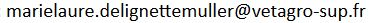

| Professor in
Biostatistics VetAgro Sup, Campus vétérinaire de Lyon 1 avenue Bourgelat 69 280 Marcy l'Etoile (France) page web institutionnelle Contact :  |
Laboratoire de Biométrie
et Biologie Evolutive UMR CNRS 5558 Département Ecologie Evolutive Université Lyon 1 43 Boulevard du 11 Novembre 1918 69622 Villeurbanne Cedex (France) institutional web page |
Site d'enseignement de biostatistique de
VetAgro Sup sur lequel vous trouverez aussi les
ressources partagées par mes collègues : https://biostatistique.vetagro-sup.fr/